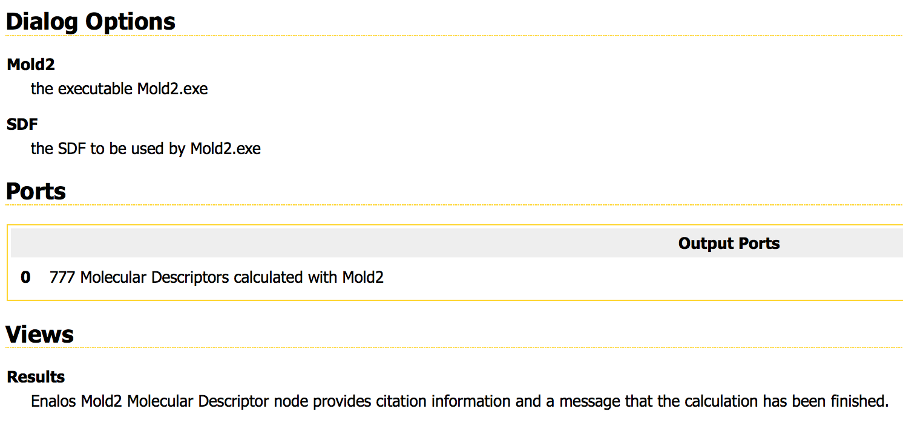

Progress Report
building CypRules system workflow
Yi Hsiao
2015/09/22
Features based on
- Mold2
- PaDEL-Descriptor
- PubChem 2D-fingerprints
KNIME supporting functionalities
- Mold2 => Enalos Mold2 node Link
- PaDEL-Descriptor => PaDEL PaDEL-Descriptor node Link
- PubChem 2D-fingerprints => CDK Fingerprints node
Current Progress
- Mold2 => try other method
- PaDEL-Descriptor => successed
- PubChem 2D-fingerprints => successed
- Some cross-platform issues (also for many KNIME nodes)
- Native node (X)
- Tried bash node (X,also cross-platform issue)
- Create new node (?)
- Not very good I/O

- Compatibility issue
-It is not possible to use the CDK "Molecule to CDK" node as input to the "PaDEL-Descriptor" node as the CDK extension uses CDK 1.5.x whereas PaDEL-Descriptor uses CDK 1.4.x. Hence, there are some compatibility issues which will only be resolved when PaDEL-Descriptor updates to CDK 1.5.x, which will only happen when CDK 1.5.x becomes the new stable release
Demo time!

Future work
- Mold2 descriptors => build new node or java snippet integration
- Clearing filter before/after the descriptor calculations
- I/O of rules => try built-in nodes
- rules => try built-in nodes
Thank you for your listening